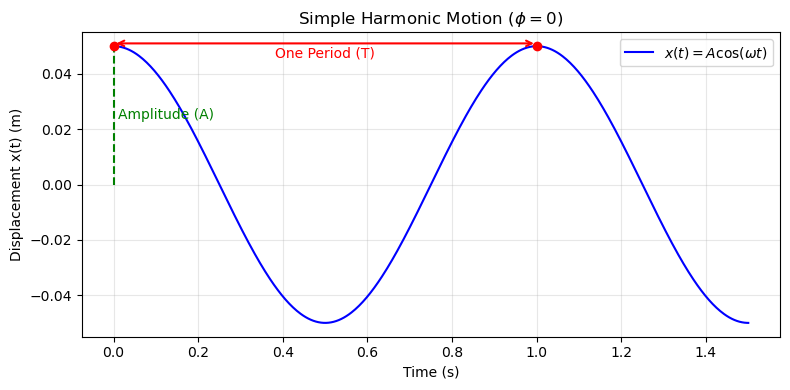

B12.1 Simple Harmonic Motion for a Spring#
B12.1.1 Motivation#
Many physical systems can be modeled as a mass attached to a spring, either literally (like a hanging mass–spring oscillator) or conceptually (like atoms vibrating in a solid or car suspensions oscillating after a bump).
When displaced from its equilibrium position, the spring exerts a restoring force that always points back toward equilibrium. If this restoring force is proportional to displacement, the system undergoes simple harmonic motion (SHM) — a fundamental type of periodic motion that appears across all of physics.
Understanding SHM for a spring gives us a foundation for more complex oscillations, including pendulums, molecules, and even electrical oscillations in LC circuits.
B12.1.2 Derivation of the Equation of Motion#
Consider a mass \(m\) attached to a spring with spring constant \(k\), oscillating horizontally on a frictionless surface.
According to Hooke’s Law:
where \(x\) is the displacement from the equilibrium position and the negative sign indicates that the force is restoring (opposite to displacement).
Applying Newton’s Second Law:
we obtain:
or equivalently,
This is the differential equation of simple harmonic motion.
We define the angular frequency:
so that the equation becomes:
This compact second-order ordinary differential equation (ODE) represents the mathematical form of any simple harmonic motion — whenever we see this equation (or one reducible to it), we should immediately recognize it as describing oscillatory dynamics about a stable equilibrium.
The general solution is a sinusoidal function:
where
\(A\) = amplitude (maximum displacement),
\(\phi\) = phase constant (depends on initial conditions).
Period and Frequency#
The angular frequency \(\omega\) is related to the physical parameters of the system:
The period \(T\) (time for one complete oscillation) and frequency \(f\) (number of oscillations per second) are given by
These relationships show that a stiffer spring (larger \(k\)) or a smaller mass leads to faster oscillations.

Velocity and acceleration follow from differentiation:
Thus, the acceleration is always opposite to the displacement and proportional to it — the defining characteristic of SHM.
B12.1.3 Energy in SHM#
In simple harmonic motion, energy continually transforms between kinetic and potential forms, but the total mechanical energy remains constant (assuming no friction).
For a spring–mass system:
The potential energy stored in the spring is
\[ U = \tfrac{1}{2} k x^2 \]The kinetic energy of the moving mass is
\[ K = \tfrac{1}{2} m v^2 \]
At any instant, the total energy is
Energy at Special Points#
At the equilibrium position (\(x=0\)):
The spring is neither stretched nor compressed, so
\(U = 0\), and all the energy is kinetic (\(K = E\)).At the endpoints (\(x = \pm A\)):
The velocity is zero (\(v = 0\)), so
\(K = 0\), and all the energy is potential (\(U = E\)).
Thus, the energy oscillates back and forth between kinetic and potential forms as the mass moves.
Deriving the General Expressions#
At the extreme position (\(x = A\)), the total energy is purely potential:
Since total energy is conserved, this must also equal the sum of kinetic and potential energies at any position \(x\):
Rearranging for velocity:
This expression shows that the mass moves fastest at the equilibrium position (\(x = 0\)) and comes momentarily to rest at the turning points (\(x = \pm A\)).
Check-in#
The oscillation of energy between \(U\) and \(K\) reflects the interplay between restoring force and inertia:
As the spring pulls the mass back toward equilibrium, potential energy converts into kinetic.
As the mass overshoots equilibrium, inertia carries it to the opposite extreme, storing energy again as potential.
This continuous exchange — without any loss of total energy — is the hallmark of undamped simple harmonic motion.
B12.1.4 Examples#
Example 1 – Determining the Period of Oscillation
A \(0.25\ \text{kg}\) mass is attached to a spring with \(k = 100\ \text{N/m}\).
Find the period, frequency, and angular frequency of oscillation.
Solution
The angular frequency is:
The period is:
and the frequency is:
So the mass completes a full oscillation about every 0.31 seconds.
Example 2 – Finding Position and Velocity at a Given Time
A \(0.50\ \text{kg}\) mass is attached to a spring (\(k = 200\ \text{N/m}\)) and released from rest at \(x = 0.05\ \text{m}\).
Find \(x(t)\) and \(v(t)\) at \(t = 0.1\) s.
Solution
Since the mass starts at maximum displacement (\(x=A\)) and zero velocity,
\(\phi = 0\) and \(A = 0.05\ \text{m}\).
Then,
with
and
At \(t = 0.1\ \text{s}\):
So after 0.1 s, the mass is 2.1 cm left of equilibrium and moving left at 0.91 m/s.
B12.1.5 Physical Interpretation#
The mass–spring oscillator shows that when a system experiences a restoring force proportional to displacement, the resulting motion is perfectly sinusoidal.
This same mathematical form describes countless physical systems — from atoms to acoustic waves — making SHM one of the most universal concepts in physics.